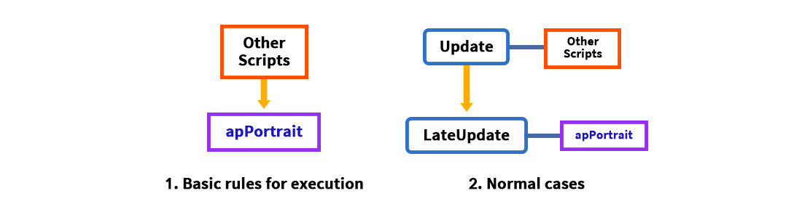
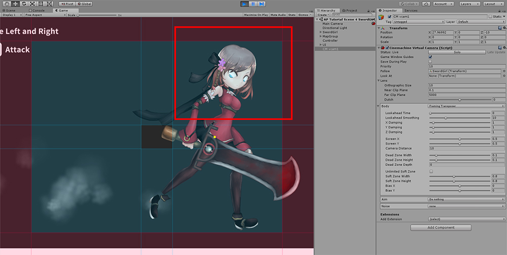
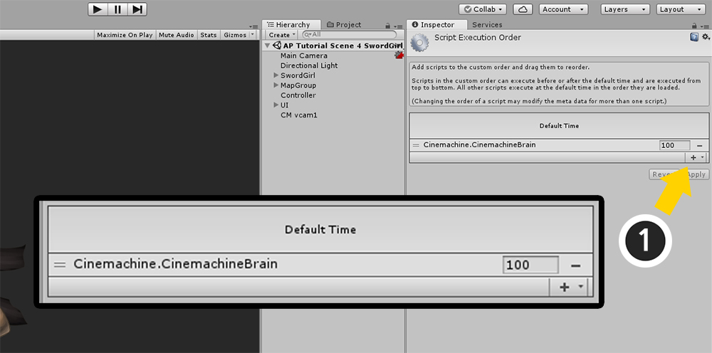
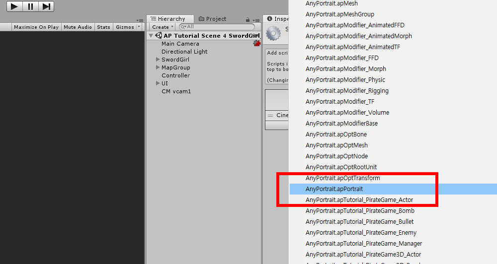

AnyPortrait > Manual > Execution order problem with assets
Execution order problem with assets
1.5.1
There are cases where AnyPortrait and other assets or scripts can malfunction when working together.
This is because AnyPortrait handles "animation" and "rendering", so it is sensitive to the execution order of scripts.
This is in the same context as Unity's physics and animation systems, which are processed in separate stages.
If you write your scripts in a typical implementation manner, you can handle AnyPortrait without major problems even if you are not aware of this rule.
On the other hand, in certain situations where this rule is violated, AnyPortrait may not work properly.
The abnormal rendering of "Clipped Mesh" is a typical symptom of this issue.
This page uses the example of "Rendering Error of Clipped Mesh", which is easy to check visually, to identify the problem with the execution order and learn how to solve it.
Note
This page explains using "Cinemachine" and "UniTask" as examples.
If you are having trouble with scripts that have similar behavior, even if they are not these assets, the explanation on this page may be helpful.
The execution order for AnyPortrait to operate normally

AnyPortrait's core script, "apPortrait", must be executed after other scripts are executed.
This is due to two main reasons:
- The animation system must operate after script functions such as "play animation" are executed to see stable results.
- For rendering processing such as clipped mesh and material control, the objects related to rendering must have completed their operations.
Normally, most scripts work in the Update function, so AnyPortrait works in "LateUpdate" to follow this rule.
However, if the logic of the script that affects the behavior of AnyPortrait is executed in a place other than Update, problems can occur.
When external assets are executed in LateUpdate
AnyPortrait's script "apPortrait" basically runs in LateUpdate.
So it always runs later than most other scripts that run in Update, so it runs reliably.
However, if there is a script whose main logic runs in LateUpdate, problems may occur due to the execution order.

The Unity asset "Cinemachine" that controls the camera operates on LateUpdate, so it is prone to "Clipping Rendering Error".
Therefore, to solve the problem, you need to change the "Script Execution Order" option so that it behaves like the image on the right.

It is the screen that Cinemachine is connected to the demonstration of AnyPortrait.
You can control the camera with Cinemachine.

When you run the game, the eyes of the character created by AnyPortrait are rendered strangely.
It is that AnyPortrait's Clipping Mask function is not working properly.
AnyPortrait calculates how to render according to the camera's position, orientation, and setting.
This includes Clipping Masks, Billboards, and Perspective calculation.
However, there is a conflict between the logic that controls the camera with Cinemachine and the camera computation logic of AnyPortrait, so it does not render properly.
If similar logic conflicts with each other, the problem can usually be resolved by making the script in AnyPortrait run later.

Execute Script Execution Order in Edit > Project Settings in Unity's menu.
Depending on the version of Unity Editor, it may be different from the above screen.
However, if you run Project Settings, Script Execution Order menu will be same.

If another asset has been installed, there may be additional execution orders for that asset in addition to Default Time in the Script Execution Order screen.
You can see in the above screen that Cinemachine's script is set to run later than Default Time.
AnyPortrait needs to run scripts later than Cinemachine.
(1) Press the + button.

Select AnyPortrait.apPortrait.

Makes AnyPortrait run later than other assets.
(1) Enter an execution order that is larger than the other assets.
(2) Click the Apply button.

When you run the game, the problem is resolved and it will render normally.
When external assets executed later than LateUpdate
1.5.1
If the script is executed in the default way of MonoBehaviour, the logic will mostly be executed in Update or LateUpdate.
However, in the case of scripts or assets that are executed asynchronously, the logic execution point in time can be made different from the life cycle of MonoBehaviour.
This includes libraries such as "UniTask" and assets that use it (such as "Naninovel").

If you look at the image on the left, you can see that the logic of the asynchronous script is executed later than LateUpdate.
Since it is executed later than apPortrait, there will be a problem due to the execution order.
In this case, it is not easy to solve the problem because apPortrait cannot be set to execute later than the script.
However, if the problem is limited to "Clipping Rendering Error", you can solve the problem as shown on the right.
This is because you can make the clipping mesh update "just before rendering" by using the option added in AnyPortrait v1.5.1.
Below is a portion of a script that uses "UniTask", one of the asynchronous script libraries.
- UniTask GitHub Page
void Start()
{
MoveCamera();
AsyncUpdateCamera().Forget();
}
private async UniTaskVoid AsyncUpdateCamera()
{
while ( Application.isPlaying && gameObject.activeInHierarchy)
{
await UniTask.Yield(PlayerLoopTiming.PostLateUpdate);
MoveCamera();
}
}
The above script example contains content that moves the camera repeatedly in PostLateUpdate, which is later than LateUpdate.

If the above script moves the camera, the clipped mesh will be rendered abnormally as above due to the execution order rules.

To solve this problem, you need to set the clipping operation to be performed later than PostLateUpdate.
(1) Click the Bake button.
(2) Select the Setting tab.
(3) Change the value of the Clipping Process option to "Before Rendering".
This option determines whether to separate the "clipping operation" from the update logic and execute it separately.
- In Update (Default): Perform the clipping operation together with the update logic. This is the default.
- Before Rendering: Perform the clipping operation just before rendering after all script updates are complete.
If you do Bake and run the game, you can see that the clipped mesh is rendered normally.
"Before Rendering" option is the easiest and most reliable way to solve the problem, but it is not a recommended option.
"Before Rendering" phase is an event corresponding to rendering, not updating, and the code executed at this time affects the performance of rendering.
In Unity, updates and rendering are not executed 1:1, and if too much code is executed unnecessarily in the rendering phase, problems such as input lag can occur.
Unless it is an unavoidable situation, game logic should be executed during the update phase.
Compatibility with other assets
Since AnyPortrait is an asset using Mesh Renderer of Unity,
it has some compatibility with Unity's basic functions or general assets.
However, Unity's latest features and various assets become increasingly diverse and specialized,
so this tool may not guarantee compatibility.
If you would like to contact our team for compatibility with the feature or asset, we will check and guide you.
If necessary, our team will update the issue for updates.
- Report Page